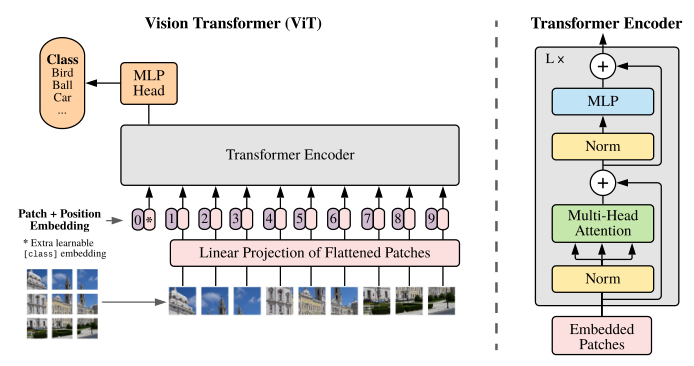
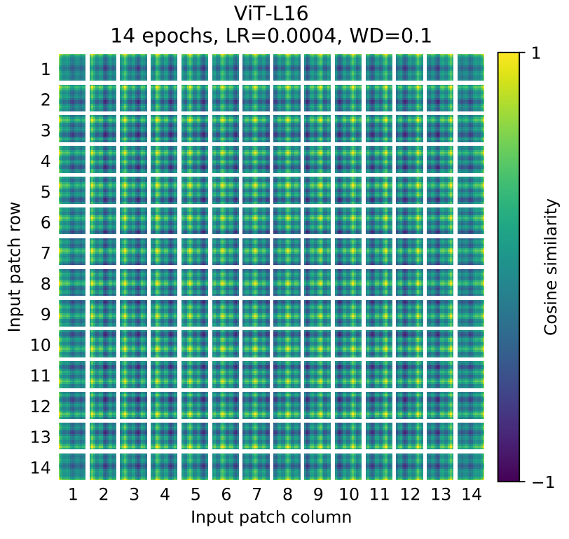
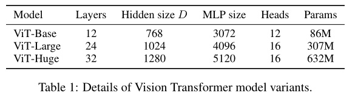

已有研究
Transformer在NLP上的成功
Attention机制在CV领域的应用，能够完全替代卷积且在理论上验证有效。
缺陷：
- 由于使用了专门的注意力机制，但未在现代硬件加速器上有效拓展，计算效率低
- 在大规模数据集上，Resnet-like的架构依然是SOTA
作者的工作：尽可能少的修改标准的Transformer，将其应用于图像领域。
自注意力机制的应用
核心思想：以每个像素作为序列中的元素会导致很高的计算复杂度，因此通过一些方法缩短序列的长度。
- Parmar et al. (2018）：仅在每个查询像素的局部邻域中应用自注意力机制，而非全局应用。stand alone attention
- Hu et al., 2019; Ramachandran et al., 2019; Zhao et al., 2020：使用上述方法，完全替代了卷积。
- Sparse Transformers (Child et al., 2019) ：应用了全局注意力的可拓展近似（scalable approximation）
- Weissenborn et al., 2019：将自注意力机制用于大小不同的块中，以扩展（scale）注意力。
- Hoet al., 2019; Wang et al., 2020a：尝试了一种极端情况，只沿单个轴。轴注意力axial attention，先在横轴上做注意力，再在纵轴上做注意力。
上述方法的缺陷：需要复杂的工程才能高效应用于硬件加速器。
相似研究：
- Cordonnier et al. (2020)：将输入图像分割成多个大小为2x2的块，在顶部（top）应用完整的自注意力机制。
- 缺陷：仅适用于小分辨率图像，且效果不如SOTA的CNN。
其他研究（TODO）
结合self-attention的CNN
image GPT（iGPT）
使用额外数据集以取得SOTA结果
当数据集大小变化时，CNN的性能变化
CNN在大规模数据集上进行迁移学习的研究
模型架构

首先将图像分为多个固定大小的patches，通过线性映射层（linear embedding）获得输入。由于图片块本身是有相对位置的，而transformer中不考虑位置信息，因此加入position embedding，然后将生成的向量序列送到标准的Transformer编码器中。为了实现分类，向序列中添加额外的可学习的”classification token”（模仿BERT），CLS token。
输入的转换
将图像拆分成块，通过线性Embedding对这些patch进行转换，作为Transformer的输入。
Image patch相当于NLP中的tokens（words），即题目所表达的，一张图片相当于很多个16x16的单词。
效果：在Imagenet-1k这样的较小的数据集上比Resnet要低几个百分点，但是在大数据集上达到了SOTA。
原因：Transformer缺少CNN固有的inductive biaes，如平移等变性（translation equivariance）和局部性，因此在数据量不足的时候并不能很好的泛化。
改进方法：在大规模数据集（14M-300M images）上进行训练。
ViT存在的缺陷：需要大数据集上进行训练才能够取得优秀的效果。
输入维度的转换：
$(H,W,C)\rightarrow(N,P^2*C)$，其中（H，W）是图像的分辨率，C是channels的数目。（P，P）是image patch的分辨率，$N=HW/P^2$是patch的数量，作为Transformer的有效输入长度。
Transformer在所有层中使用恒定的潜在向量大小D，作者将patch展平，并通过可训练的线性投射层将其映射到D维。
Position Embedding
并非直接传具体的数字1,2,3,….而是有一个表，表的每一行代表了序号，每一行是一个向量，维度是768（$16163$），这个表通过学习得到。然后将这个向量信息加到前面生成的向量里面（197x768：其中196是patch的个数，注：224x224的图片，16x16的patch size。然后还有个cls token（197x1）），这里的加并非concatenation，是直接sum。
使用标准的1D可学习的Position embedding，没有用2D的是因为没有显著提升。
从附录中的figure 10也可以看到，Position Embedding是能够通过学习得到相对位置信息的，且能够学习到2D的邻域相似性。这也验证了上面的结论。

归纳偏置
归纳偏置：一种先验知识（提前做好的假设）
- locality：卷积神经网络以滑动窗口的形式，一点一点在图片上进行卷积，因此假设在图片上相邻的区域会有相邻的特征。
- 平移等变形translation equivariance：$f(g(x))=g(f(x))$，无论先做f函数还是g函数，结果是不变的。其中f可以理解为卷积操作，g可以理解为平移操作。
相较于CNN，ViT的image-specific归纳偏差要少得多。
在CNN中，整个模型的每一层有局部性，平移等效性，二维邻域结构。
在ViT中，只有MLP具有平移等效性和局部性，自注意力是全局的。
二维邻域结构的时候非常谨慎：在模型开始时，通过将图像切割成块并在fine-tuning time来调整针对不同分辨率图像的Position Embedding。除此之外，初始化时的position embedding不携带有关patch的2D位置信息，必须从头学习patch之间的所有空间关系。
混合模型
输入序列由CNN的特征图组成，而非原始的图像块。
然后通过patch embedding projection对从CNN特征图中提取得到的序列进行处理。
在特殊情况下，patch的空间大小可以为1x1，这意味着输入序列是通过简单地将特征图的空间维度展平并投影到Transformer的维度上获得的。
微调以及更高的分辨率
将预训练的ViT模型的预测头移除，加入一个零初始化的DxK的前馈层，其中K是下游任务中类别的数量。
对于更高的分辨率，保持patch size不变，这样会产生更大的有效序列长度。
ViT可以在内存限制范围内处理任意长度的序列，但预训练的position embedding可能就不再适用了。
因此作者根据它们在原始图像中的位置，对预训练的position embedding进行2D插值。这种分辨率上的调整和patch extraction是将有关图像2D结构的归纳偏置注入到ViT的唯一的点。
实验
数据集
预训练
- ILSVRC-2012（1.3M images、1k classes）文中称之为Imagenet。
- ImageNet-21k （14M images、21k classes）
- JFT（303M 高分辨率images、18k classes）
下游任务
- ImageNet on the original validation labels and the cleaned-up
ReaL labels - CIFAR-10/100
- Oxford-IIIT Pets
- Oxford Flowers-102
- 19-task VTAB classification suite
预处理方法见（ Kolesnikov et al. (2020））
模型变体

ViT-L/16 means the“Large” variant with 16 × 16 input patch size.
Transformer的序列长度与块大小的平方成反比，因此块大小较小的模型计算成本更高。
Baseline
Resnet，但是batch normalization换成了group normalization，并采用了标准化的卷积。
对于混合体，将中间特征图输入到ViT中，patch大小为一个像素。
训练参数(TODO)
评价指标
通过linear few-shot或者fine-tuning accuracy来进行评价。
fine-tuning accuracy在模型微调后进行评估。
linear few-shot是通过解决正则化最小二乘回归问题得到的，该问题将训练图像子集的（冻结）表示映射到${-1,1}^k$目标向量。即不去finetune，直接拿来做特征提取器，做一个regression。
在评价中主要用fine-tuning accuracy，在微调成本过高时使用few-shot进行快速动态评估。
与SOTA模型的比较
在性能指标有微小的提升，但是预训练使用的资源大大减少。
对于数据集大小较为敏感，需要大量数据集进行训练。在Imagenet上不如Resnet，但是在更大的数据集上超国了Resnet。
在迁移学习的准确率上，ViT的效果要好过Resnet。在预训练计算量较小时，hybrid能够改进纯transformer。但随着模型的增大，这种差异消失了。这一现象是惊人的，因为人们在直觉上会觉得，卷积局部特征处理能够帮助任何大小的ViT。此外，ViT在作者尝试过的预训练计算量范围内并没有达到性能饱和，因此可以做进一步的拓展，有进一步提升的空间。
作者的结论：卷积归纳偏差对较小的数据集很有用，但对于较大的数据集，直接从数据中学习相关模式就足够了，甚至是beneficial的。
自监督训练
采用自监督方法（masked patch prediction，模仿BERT），使用ViT-B/16在Imagenet上实现了79.9%的准确率，比从头开始训练高了2%，但是依然比有监督训练低了4%。
结论
与先前的使用自注意力机制的CV工作不同（采用image-specific的归纳偏置、ViT仅在对初始patch进行提取的时候使用了），ViT将图像表达为一系列的patch，并使用NLP中的Transformer对序列进行处理。这在大规模的数据集上取得了SOTA的效果，同时能够保持一个相对低的预训练代价。
Further Work
- 将ViT应用于检测和分割任务
- 进行基于自监督学习的预训练方法的探索
总结
优点
- 使用相对少的计算资源
- 在大数据集上取得了SOTA
- 可以通过预训练进一步提升性能，在已观测范围内未达到性能饱和
缺点
- 在中小数据集上效果不佳（可以考虑采用混合模型，加入CNN的归纳偏置以提升效果）
- 在图片分辨率变化较大的时候，仅仅通过简单的2D插值难以保持Position Embedding的有效性
进一步的工作
- 论文仅在分类任务上做了验证，还可以尝试用于检测和分割任务
- 改进自监督学习的方法